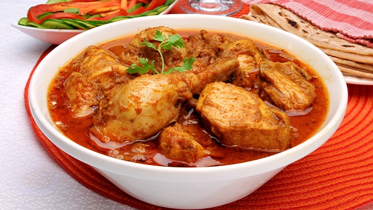

Desi Dish Recipes

The Ultimate Easy Chicken Korma
Ingredients
- 650 g chicken breast 3 large breast, cut into even-sized small chunks
- cup yogurt plain, 2% fat
- cup yogurt plain, 2% fat
- 2 onions small, cut into quarters
- ¼ cup cashew nuts plain, unsalted
- 4 garlic cloves, peeled
- 2 inch ginger fresh, peeled
- 3 tsp cumin powder
- 5 cardamom green, seeds only
- 1 green chilli or jalapeno, washed, stem removed
- ¾ tsp salt sea salt
- ½ cup cilantro washed, leaves and stems, finely chopped for garnish
- ½ tsp garam masala
Instructions
- In a blender or food processor add yogurt, cashew nuts, onions, garlic, ginger, cardamom, salt and green chilli (optional) and blend until creamy. Set the korma sauce aside.
- In a large pan, add the chicken and saute for a couple of minutes on medium-high heat.
- Reduce the heat to low and pour the korma sauce over the chicken. Stir, cover to tightly seal and cook for 20 minutes or until the chicken is cooked through - stirring occasionally so that the chicken doesn’t stick to the bottom of the pan. Add more water if needed but not too much.
- Add chopped cilantro, and garam masala and then serve with rice, quinoa, roti, paratha or naan. Toasted cashews on tip are optional!
Notes
- Slice chicken breast into small similar-sized pieces so they cook evenly.
- Add more garam masala for an added flavour boost.
- Simmer on low to medium heat, stirring frequently to make sure the korma sauce does not dry out too much and stick to the bottom of the pan.
- To create a creamy sauce, blend the ingredients thoroughly.
- Store-bought garlic and ginger pastes often contain preservatives that make the dish less flavorful. Using fresh ingredients such as fresh garlic, ginger, and cilantro will produce a more authentic taste.